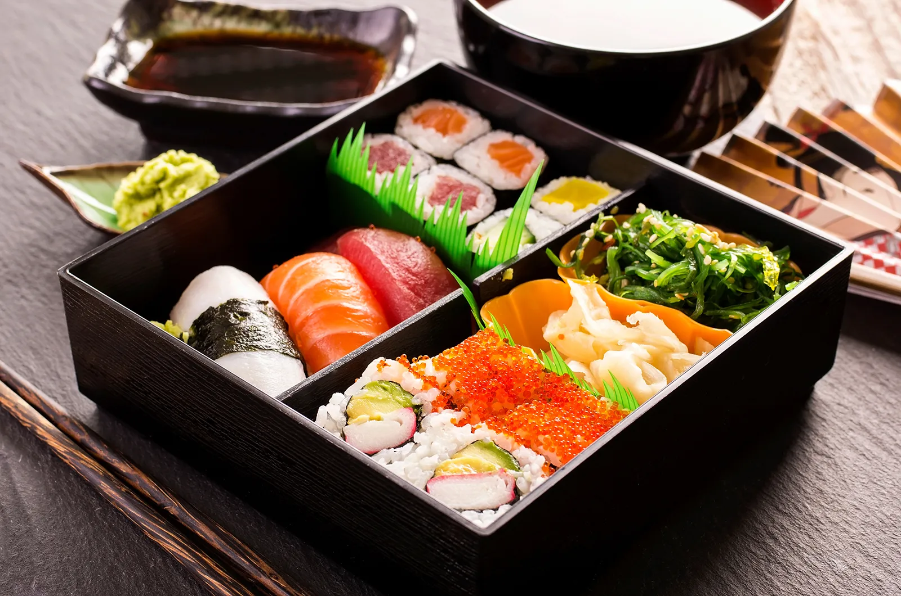

Welcome to Recipe Hub!
Your gateway to delicious recipes from around the world.
welcom to recipe hub
where the flavours meet imagination Dive into recipes inspired from cultures and creativity throughout the world
recipe hub
featured recipes

ramen
Rich broth, springy noodles, and flavor straight from your favorite shows.

Classic onigiri
Soft rice balls filled with love and wrapped in crispy seaweed.

colourful bento box
Perfectly balanced, aesthetic, and anime-approved lunch.